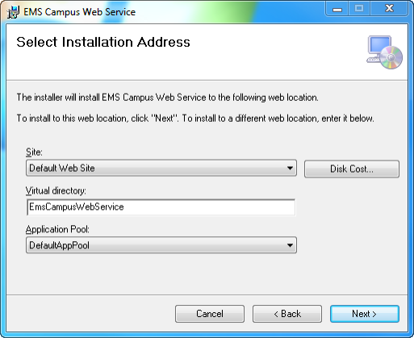
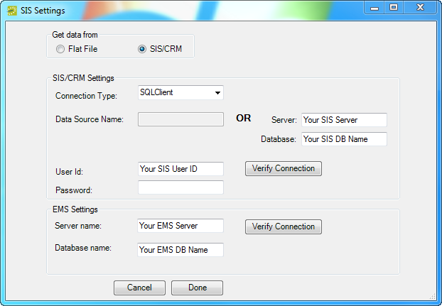

Install or Upgrade the EMS Campus Web Service
Important: Before beginning the installation process, please do the following:
- Install or upgrade your EMS databases as outlined in the EMS Installation Instructions.
- Manually uninstallany previous versions of the EMS Campus Web Service on your web server.
- Verify that the prerequisite software has been installed.
- Verify/confirm that the View.sql file has been executed against your SIS database. (Required for both first time installations AND upgrades.)
- Download the EMSCampusWebService.msi file onto the web server that will be running the web service.
- Run EMSCampusWebService.msi
- The first screen welcomes you to the EMS Campus Web Service Setup Wizard. Click Next to begin the installation process. The Select Installation Address screen will appear.

- Select the Site, Virtual Directory and Application Pool. It is recommended that you keep the default settings. The installation process will create a Physical and Virtual directory on your web server named “EMSCampusWebService” (or whatever value you entered in the Virtual Directory field.) Click Next.
Note: The EMS Campus Web Service should not be installed in the same Virtual Directory as other EMS web-based products.
- The Confirm Installation screen will appear. Click Next. The SIS Settings screen will appear.

- In the Get data from section, choose either Flat File or SIS/CRM based on your SIS data source.
- Flat File
Choose this option if you will be outputting your SIS data to tab-delimited files. The EMS Campus Web Service will connect to and read information from these files which must conform to a specific format. See Appendix A for file format specifications. If you choose this option, please skip to Step 13.
- SIS/CRM
Choose this option if EMS Campus will be tied directly to your SIS database. The EMS Campus Web Service will connect directly to and read information from your SIS.
- Flat File
- In the SIS/CRM Settings section, select your Connection Type based on the Database Management System that your SIS uses:
- SQLClient – MS SQL Server
- OracleClient – Oracle
- ODBC – Other ODBC-compliant database
- Select your Connection Method.
- Data Source Name – The DSN for your SIS database if you selected OracleClient or ODBC. This option requires an ODBC Data Source created via the ODBC Data Source Administrator.
- Server / Database – Your SIS server name and database name if you selected SQLClient.
- Enter the User ID / Password for your SIS. The account created in the ‘Installing the EMS Campus Views’ section in this document should be used.
- Click the Verify Connection button to confirm a successful connection to your SIS database.
- In the EMS Settings section, enter your EMS Server Name / Database Name.
- Click the Verify Connection button to confirm a successful connection to your EMS Campus database.
- Click Done. The Installation Complete screen will appear. Click Close. EMS Campus clients using the tab-delimited file option should skip to Step 19.
- Secure the Queries.xml file provided by your Client Services Consultant.
- On your web server, navigate to the CustomConfig folder within your EMS Campus Web Service directory (typically C:\Inetpub\wwwroot\EMSCampusWebService\CustomConfig).
- Replace the existing Queries.xml file with the new Queries.xml file (required for new EMS Campus installations AND upgrades.)
- After following the steps above, verify your installation by opening a browser and entering the following URL:
http://[ServerName]/EMSCampusWebService/EMSCampusService.asmx(replace [ServerName] with the name of your web server)
The following screen should appear: